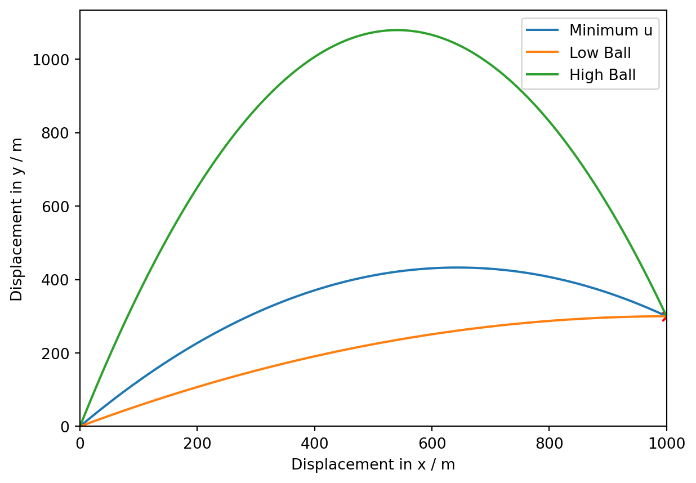

import matplotlib.pyplot as plt
import numpy as np
import mathBPhO Computational Challenge 2024: Challenge 3: Calculating the trajectories of the Low Ball, High Ball and Minimum Initial Velocity to Hit (X, Y)
Python
BPhO Computational Challenge
Computational Physics
Projectile Motion
The solution to the third challenge of the BPhO Computational Challenge 2024, calculating the trajectory of three projectiles, the lowest and highest angles to hit coordinate (X, Y) based on an inputted initial velocity and the minimum initial velocity needed to hit the given coordinate.
Introduction
Detailed in this blog post is the solution to the third challenge of the BPhO Computational Challenge 2024. The objective is to calculate the trajectories of three projectiles which are launched from (0, 0) and pass through fixed point (X, Y). One of these projectiles is the minimum launch velocity needed for the projectile to hit the chosen point, and the second and third are “low and high ball” trajectories, the highest and lowest possible angles the projectile can be launched at and still collide with the target coordinates based on the entered initial velocity.
DISCLAIMER: This is just a snippet of our submission for the competition, since the final product was an application 2800 lines of code in length. To see the two minute video submission detailing the entire solution with my partner watch the video here: https://youtu.be/ViT6NdrrbJo .
Setting up the Problem
First, the fundamental libraries are imported. Matplotlib for plotting, numpy for mathematical and trigonometric functions, math for trigonomatric functions (specifically arctan) and figure is imported from matplotlib to use the axes functions.
Next, the conditions / parameters of the model are set. In the final GUI application submitted for the competition, these would be inputted using text input boxes. \(g\) would be set using a combobox containing popular celestial objects, such as the planets in our solar system, or using a text box to enter a custom value.
\(Y\) is the y coordinate that is hit by the projectile and \(X\) is the x coordinate.
For the purpose of this demonstration of the algorithm, I have used the below values:
X = 1000
Y = 300
u = 150
g = 9.81The problem must be decomposed into three separate problems. The first problem is the minimum velocity projectile. There are equations which can be used to calculate the minimum velocity and the corresponding angle of projection for the model. The second and third problems consist of the low and high ball trajectories. These can also be computed using equations.
Minimum Launch Velocity
The minimum launch velocity must be calculated. This is achieved using the equation \(u_{min}=\sqrt{g}\sqrt{Y + \sqrt{X^2 + Y^2}}\).
Now, the corresponding angle of projection must be calculated using \(\theta_{min}=\tan^{-1}(\frac{Y+\sqrt{X^2+Y^2}}{X})\).
Then, the velocity of the projectile is resolved into its horizontal and vertial components using the equations \(u_x^{min}=u_{min}\cos(\theta_{min})\) and \(u_y^{min}=u_{min}\sin(\theta_{min})\).
Finally, the time of flight is calculated with \(T_{min}=\frac{X}{u_x^{min}}\).
minu = np.sqrt(g) * (np.sqrt(Y + np.sqrt(X**2 + Y**2)))
mintheta = math.atan((Y + np.sqrt(X**2 + Y**2)) / X)
minux = minu * np.cos(mintheta)
minuy = minu * np.sin(mintheta)
mint = X / minuxAn empty array of x and y coordinates for the minimum velocity trajectory are created. These will be appended to in the for loop. A timestep of 0.01s is used to calculate the position of the projectile between the instant the projectile is launched and the time of flight. The equations \(x_{min}=u_x^{min}t\) and \(y_{min}=u_y^{min}t-\frac{1}{2}gt^2\) are used to update the x and y coordinates of the projectile between each timestep.
x = []
y = []
for i in np.arange(0, mint, 0.01):
t = i
x.append(minux * t)
T = t**2
y.append((minuy * t) - (0.5 * g * T))Low and High Ball Trajectories
The angle of projection for the low and high ball trajectories is determined using the following equations: \(\theta_{\pm}=\frac{-b\pm\sqrt{b^2-4ac}}{2a}\), where \(a=\frac{g}{2u^2}X^2\), \(b=-X\) and \(c=Y+\frac{gX^2}{2u^2}\).
a = (g / (2 * u**2)) * X**2
b = -X
c = Y + ((g * X**2)/(2 * u**2))
low_theta = math.atan((- b - np.sqrt(b**2 - (4 * a * c)))/(2 * a))
high_theta = math.atan((- b + np.sqrt(b**2 - (4 * a * c)))/(2 * a))The velocity is resolved into its horizontal and vertical components and the time of flight for the low ball trajectory is calculated using the equations \(u_x^{-}=u\cos(\theta_{-})\), \(u_y^{-}=u\sin(\theta_{-})\) and \(T_{-}=\frac{X}{u_x^{-}}\) respectively.
low_ux = u * np.cos(low_theta)
low_uy = u * np.sin(low_theta)
low_tflight = X / low_uxAgain, a for loop is used to calculate the x and y coordiantes of the projectile with a timestep of 0.01s between the instant the projectile is launched and the time of flight. Empty arrays of x and y coordinates are created and appended to using the equations: \(x_{-}=u_x^{-}t\) for x coordiantes and \(y_{-}=u_y^{-}t-\frac{1}{2}gt^2\) for y coordinates.
low_x = []
low_y = []
for low_i in np.arange(0, low_tflight, 0.01):
low_t = low_i
low_x.append(low_ux * low_t)
low_y.append((low_uy * low_t) - (0.5 * g * low_t**2))This process is then repeated for the high ball trajectory.
high_ux = u * np.cos(high_theta)
high_uy = u * np.sin(high_theta)
high_tflight = X / high_ux
high_x = []
high_y = []
for high_i in np.arange(0, high_tflight, 0.01):
high_t = high_i
high_x.append(high_ux * high_t)
high_y.append((high_uy * high_t) - (0.5 * g * high_t**2))Plotting the Trajectories
First, a figure of subplots is created to use the ax functions.
The three trajectories are then plotted, along with the marker showing the user’s chosen coordinate.
Finally, the parametrs of the plot are set, including labels for the axes, limits for the axes and labels for each of the trajectories.
fig, ax = plt.subplots()
ax.plot(x, y, label="Minimum u")
ax.plot(low_x, low_y, label="Low Ball")
ax.plot(high_x, high_y, label="High Ball")
ax.scatter(X, Y, marker="x", color="red")
ax.set_xlabel("Displacement in x / m")
ax.set_ylabel("Displacement in y / m")
ax.set_ylim(0)
ax.set_xlim(0, X)
ax.legend()